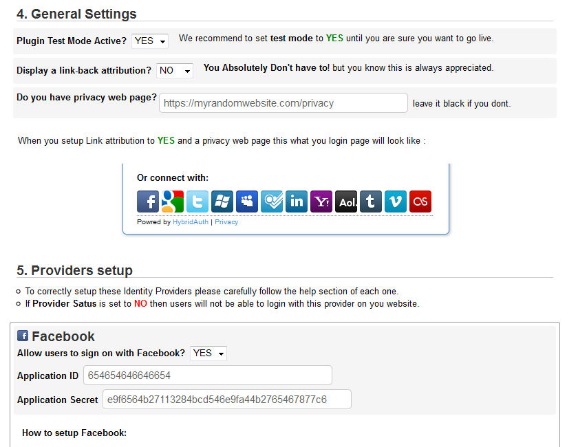
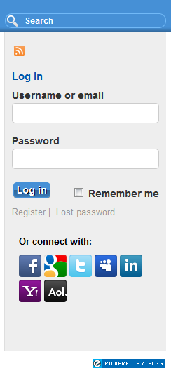
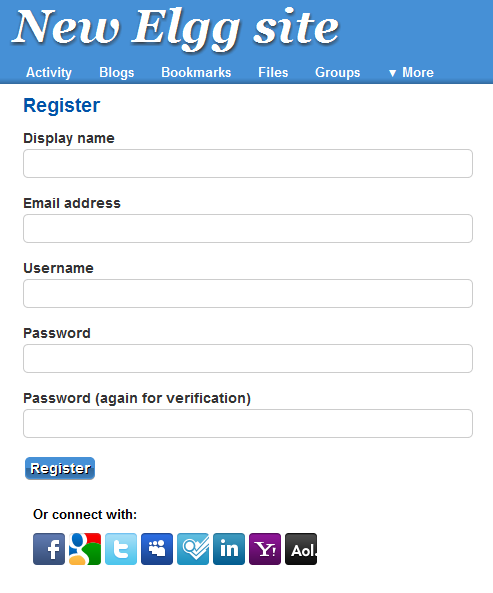

Overview
This plugin allow your visitors to register and login with social networks and identities providers such as Facebook, Twitter, Foursquare and Google
Currenty Supported Providers:
- Facebook
- Google
- Yahoo
- Twitter
- Windows Live
- Myspace
- Foursquare
- Linkedin
- AOL
Basically this plugin can be extended to support as many providers such as Gowalla, Last.fm, Vimeo, Viadeo, Tumblr, QQ, Sina, Murmur, Plurk and maybe more.
Get Help and Support
If you run into any issue, the best way to reach me is by contacting me at
hybridauth@gmail.com
Note: This is free software. Please be patient. Polite and descriptive questions will be given priority.
1. Configure
- Download, Unzip and drop the extention on mod folder,
- As admistration, goto Tool Administration,
- Find then Enable elgg_social_login,
- Run Plugin Diagnostics to check some requirements,
- Providers setup
- To correctly setup these Identity Providers please carefully follow the help section on Allow users to sign on with {provider}?.
- If Provider Satus is set to NO then users will not be able to login with this provider on you website.

2. Login view
When you finish configuring the extention, any enabled provider icon will appear after the login form. under
Or connect with:

3. Register view
Same as login view.

4. Login flow
When a user click an icon, a popup will apprear where it will be redirected to the provider authentication web page.
If he grant access for your website, he will redirected back to your website.
- If the user do not exist, this extension will try to create a new accout for him
- Else, if an account does exist for him, then i will automatically logged in to the website.
Also the user profile image, descrition an as much information as possible will be automatically imported.
And that is it!